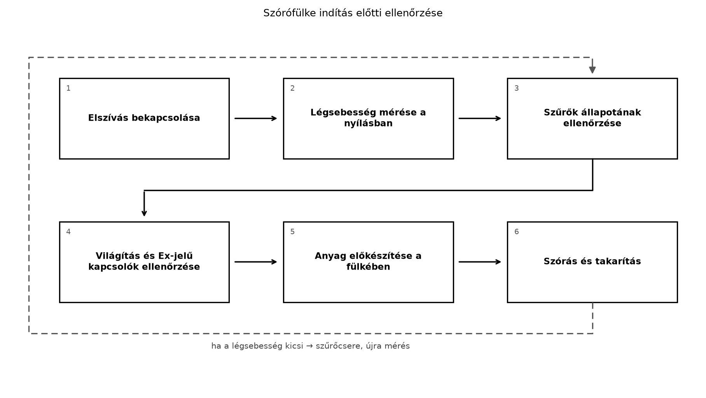

Egy asztalosműhelyben gyakori jelenet: a frissen csiszolt konyhabútor-ajtót le kell lakkozni. Ha ezt a gépműhely közepén, nyitott ajtó mellett végezzük, a por beágyazódik a lakkba, az oldószergőz szétterjed a műhelyben, és a szóróköd a gépekre, a padlóra és a tárolt anyagokra is ráül. A szórófülke ezt a munkát egy ellenőrzött, elszívott, megvilágított, tűzvédelmi szempontból kialakított helyre zárja. A felületkezelés akkor lesz egyenletes és gyorsan tovább dolgozható, ha a fülke után a száradást, a fóliázást és a laminálást is gépekkel, szabályozott hőmérsékleten és páratartalom mellett végezzük.
Ebben az alfejezetben a felületkezelés üzemi berendezéseit ismerjük meg: a szórófülkéket, a szárítóberendezéseket, valamint a fóliázó és lamináló gépeket. A cél nem az, hogy minden gépet kezelni tudj, hanem az, hogy értsd a működésüket, tudd ellenőrizni az állapotukat munka előtt, és felismerd a helytelen beállításból vagy karbantartásból eredő hibákat.
Képzeld el a szórófülkét úgy, mint egy nagy, elöl nyitott dobozt. A munkadarab a fülke belsejében lévő forgatható állványon áll. A fülke hátsó fala felé erős légáramlás halad: a tiszta levegő elölről, a kezelő háta mögül érkezik, átáramlik a munkatéren, magával viszi a szóróködöt és az oldószergőzt, majd a hátsó szűrőn vagy vízfüggönyön át távozik. A kezelő tehát a friss levegő felőli oldalon áll, és nem a szennyezett levegőben dolgozik. A fülke belsejét kívülről, robbanásbiztos lámpatesteken át világítják meg, hogy a frissen felvitt lakkréteg nedves fényét jól lásd.
Az alábbi folyamatábra a munka előtti ellenőrzés fő lépéseit mutatja:

Definíció. Szórófülke: olyan, általában elöl nyitott, zárt oldalfalakkal és tetővel rendelkező munkahely, amely a szórással keletkező festékködöt, oldószergőzt és port elszívja, leválasztja, és a kezelőt a friss levegő felőli oldalon tartja. A szórófülke lehet száraz szűrős vagy vízfüggönyös kivitelű.
Definíció. Száraz szűrős szórófülke: a levegőből a festékrészecskéket cserélhető szűrőbetétek (általában papír, üvegszál vagy szintetikus szálas szűrő) választják le. A szűrő fokozatosan telítődik, ezért cserélni kell.
Definíció. Vízfüggönyös szórófülke: a szóróködöt egy függőleges vízfüggönyön vagy vízpermettel átmosott felületen választják le. A víz megköti a festékszemcséket, az iszap a fülke alján gyűlik össze, és ülepítés vagy vegyszeres kezelés után kell eltávolítani.
Szabály. A szórófülke elszívásának a munkanyílás teljes felületén egyenletes, a kezelőtől a munkadarabon át az elszívófal felé irányuló légáramlást kell biztosítania. A nyílásban mért légsebesség tájékoztató értéke száraz fülkéknél kb. 0,5–1,0 m/s, vízfüggönyös fülkéknél ennél is nagyobb lehet (ellenőrizendő: gépkönyv és üzemeltetési utasítás). Ha a sebesség túl kicsi, a szóróköd visszacsapódik a kezelő felé; ha túl nagy, a frissen felvitt bevonatot is megfújhatja, és a fólia vagy lakk felülete hullámossá válhat.
Összefüggés. Az elszívott térfogatáramot a nyílásfelület és a légsebesség szorzataként számoljuk:
ahol a térfogatáram (m³/s), a légsebesség (m/s), pedig a szabad nyílásfelület (m²).
Szabály. A szórófülke villamos berendezéseit, világítását, kapcsolóit, motorjait robbanásbiztos kivitelben kell kialakítani, mert a szóróköd és az oldószergőz gyúlékony elegyet alkothat. A készülékeken Ex-jelölés és zónabesorolás található (pl. 1. vagy 2. zóna, gáz- vagy porrobbanás elleni védelem). A pontos besorolást a telepítési hely és az alkalmazott anyag biztonsági adatlapja alapján kell meghatározni (ellenőrizendő: hatályos ATEX-szabályozás és a fülke dokumentációja). Az Ex-jelű berendezést csak szakember szerelheti és javíthatja.
Definíció. Szárítókamra: zárt, hőmérséklet- és gyakran páratartalom-szabályozott tér, amelyben a lakkozott vagy ragasztott munkadarabokat meleg levegő keringtetésével szárítjuk. A kamra lehet szakaszos üzemű (zsilipezhető, kocsis) vagy folyamatos alagútrendszerű.
Definíció. Meleglevegős szárító: a levegőt fűtőregiszteren át melegítik, ventilátorral keringtetik, és a bevonat oldószerének vagy vízének elpárolgását gyorsítja. A hőmérsékletet és a levegőcserét a bevonat típusához kell igazítani.
Definíció. Infravörös (IR) szárító: hősugárzó panelekkel közvetlenül a bevont felületet melegíti fel. A sugárzás a réteget belülről kifelé szárítja, ezért vastagabb rétegeknél is hatékony, de a túl erős besugárzás buborékot vagy felületi hibát okozhat.
Definíció. UV-szárító: ultraibolya lámpákkal térhálósítja a speciális, fotoiniciátort tartalmazó UV-lakkot vagy UV-festéket. A száradás nem elpárolgás, hanem kémiai térhálósodás, ezért nagyon gyors, másodpercek alatt lejátszódik. Csak UV-sugárzásra érzékeny bevonatokhoz használható.
Definíció. Membránprés: rugalmas membránnal ellátott prés, amely hővel és vákuummal (vagy túlnyomással) fóliát vagy furnért présel a marott, profilozott vagy 3D felületű lapra. A fólia felmelegítve lágyul, és a vákuum a membránon keresztül a munkadarab felületére szorítja.
Definíció. Kasírozó gép: sík lapok folyamatos, görgős vagy szalagos felületborítására szolgáló gép. A hordozóra ragasztót visz fel, majd a tekercsből adagolt fóliát, papírt vagy furnért hengerpárok nyomják rá, és a felesleget levágják.
A szórófülke mindig három fő részből áll: befúvás, munkatér, elszívás és leválasztás. A befúvott levegőt előszűrőn át vezetik be, hogy a műhelyből ne kerüljön por a friss lakkrétegbe. A munkatérben a levegő egyenletes, lehetőleg örvénymentes áramlását terelőlemezek és a hátsó elszívófelület biztosítja. A szennyezett levegő ezután a száraz szűrőn vagy vízfüggönyön halad át, ahol a festékrészecskék leválnak, majd a ventilátor a szabadba vagy visszakeverő rendszerbe továbbítja a tisztított levegőt.
Gépbiztonság. A szórófülkét csak betanított, az üzemeltetési utasítást ismerő dolgozó használhatja. A munkavégzés során viselj a bevonatrendszerhez előírt légzésvédőt (általában aktív szénbetétes vagy ellenőrzött tömítésű félálarc, illetve túlnyomásos frisslevegős rendszer), védőszemüveget és oldószerálló kesztyűt. Tilos a szórófülkében nyílt lángot, szikrát keltő eszközt használni, a villamos berendezést megbontani, vagy a szűrőket eltávolítva dolgozni. A fülke ajtaját vagy elszívását kikapcsolva szórni tilos. A szórófülkében keletkező oldószeres, festékes hulladékot zárt, erre a célra rendszeresített edényben kell gyűjteni, nem a kommunális hulladékba dobni.
Recept. Szórófülke ellenőrzése munka előtt.
A légszállítást a nyílásméretből ellenőrizni is tudod. Ha a nyílás 1,8 m széles és 0,9 m magas, a nyílásfelület 1,62 m². sebességnél:
Ezt átszámítva:
Tehát a fülke elszívó rendszerének körülbelül 3500 m³/h légszállításúnak kell lennie ehhez a nyíláshoz és sebességhez. A pontos értéket a gépkönyv adja meg, a fenti számolás a működés ellenőrzésére való.
A szárítóberendezések közös feladata, hogy a bevonatból az oldószert vagy a vizet biztonságos sebességgel eltávolítsák, illetve a reaktív bevonatokat térhálósítsák. A fő különbségek a hőátadás módjában és a szárítás sebességében vannak.
A hőmérséklet és a relatív páratartalom szabályozása akkor is fontos, ha nem fűtött kamrában, hanem a műhely légterében szárad a munkadarab. A vízbázisú lakkok lassan száradnak hideg, párás helyiségben, a pára lecsapódhat, ami matt felületi foltokat okoz. Az oldószeres bevonatoknál a túl gyors hőmérséklet-emelkedés felforrást, buborékokat idézhet elő.
Összefüggés. A szárítókamra levegőcseréjét a kamra térfogatából és az előírt légcsere-számból becsülhetjük:
ahol a friss levegő térfogatárama (m³/h), a légcsere-szám (1/h), a kamra térfogata (m³).
Példa. Egy meleglevegős szárítókamra belmérete 4 m hosszú, 2 m széles, 2,2 m magas. A térfogata . Ha óránként 8-szoros légcserét írunk elő, akkor friss levegőt kell bevezetni. Ez a számítás a szellőzés méretezéséhez ad kiindulási értéket; a pontos légmennyiséget az oldószergőz-koncentráció és a hőterhelés is befolyásolja (ellenőrizendő: a bevonat biztonsági adatlapja és a kamra gépkönyve).
A fóliázás és laminálás gépei két fő csoportra oszlanak: síkfelületű és profilfelületű borítás.
Gépbiztonság. A művelet betanított, felügyelt tanulónak szól; védőberendezés nélkül, egyedül, fáradtan ne végezd. Kasírozó és profilburkoló gép: a hengerpár behúzási pontjához menet közben nyúlni tilos, a védőburkolat és a vészleállító (húzózsinór) legyen működőképes; laza ruha, kesztyű a behúzási pontnál tilos. Membránprés: forró felület – hővédő kesztyű csak a nem forgó részek kezelésénél; a fedél záródási terébe benyúlni tilos. Élvágó kés cseréje csak áramtalanítva. UV-szárító: a lámpa árnyékolását nem szabad megbontani, a sugárzásba nézni tilos; UV-lakkot bőrre ne juttass (nitrilkesztyű). (ellenőrizendő: gépkönyv)
A gépi fóliázás előtt a lapnak pormentesnek, síknak, éleinek záróképesnek kell lennie. A ragasztófelhordás egyenletességét próbadarabon ellenőrzik, mert a hiányos ragasztóréteg leválást, a túl sok ragasztó pedig átütést okoz.
A szórófülke, szárító és fóliázó gépeknél a minőségellenőrzés három szintre oszlik: a gép állapota, a bevonat felhordása és a kikeményedett felület tulajdonságai.
Egy asztalos műhelyben sorozatban készítettek MDF-frontos konyhaajtókat, és vízbázisú lakkal szórták őket. A szórófülke száraz szűrős volt, de a szűrőcserét több hétig halogatták. A dolgozó azt tapasztalta, hogy a lakkozott felületeken egyre több porszem és apró festékköd-csepp jelent meg, a fülke előtti padló pedig ragacsossá vált. A légsebességmérés a nyílásban a korábbi 0,7 m/s helyett csak 0,25 m/s-ot mutatott. A szűrőbetét szinte teljesen eltömődött, ezért a szennyezett levegő egy része visszaáramlott a műhelybe. A hiba megszüntetése után a szűrőt kicserélték, a fülkét kitakarították, és bevezették a heti szűrőellenőrzést. A tapasztalat: a szórófülke csak akkor védi a terméket és a dolgozót, ha a szűrőt és a légáramlást rendszeresen ellenőrzik, nemcsak akkor, amikor a hiba már látható.
1. feladat (A) Sorold fel a szórófülke indítás előtti ellenőrzésének legalább négy lépését, és indokold meg mindegyiknél, miért fontos.
2. feladat (A) Határozd meg, mi a különbség a levegős, a meleglevegős és az infravörös szárítás hőátadása között. Melyik alkalmas vastagabb bevonat gyors szárítására, és miért?
3. feladat (B) Egy szárítókamra belső mérete 5,0 m hosszú, 2,4 m széles, 2,5 m magas. A kamra óránként 10-szeres légcserét igényel. Számítsd ki a szükséges friss levegő térfogatáramát m³/h-ban. Ellenőrizd a nagyságrendet!
4. feladat (B) Egy membránpréssel MDF-frontot fóliáznak. A próbadarabon a fólia a sík felületen jól tapad, de a marott profil 2 mm-es belső ívénél felválik. Nevezz meg legalább három lehetséges okot, és mindegyikre adj vizsgálati vagy javítási javaslatot.
5. feladat (C) Tervezd meg egy kis műhely szórófülkéjének karbantartási rendjét! Vedd figyelembe a száraz szűrő cseréjét, a világítás és az Ex-jelű berendezések ellenőrzését, a ventilátor és az elszívó csatorna tisztítását, valamint a hulladék gyűjtését. Add meg, milyen gyakorisággal és milyen felelős végezze az egyes ellenőrzéseket, és milyen dokumentáció készüljön.
6. feladat (D) Készíts rövid ellenőrző adatlapot a szórófülkéhez! Tartalmazza a mérési pontokat (nyílás szélessége, magassága, légsebesség, szűrő állapota, vízszint ha szükséges, világítás, Ex-jelű készülékek állapota), a mért értékek oszlopát, a megengedett tájékoztató értékeket, és az „intézkedés” rovatot.
Önellenőrzés – válaszok
1. feladat megoldása
Lehetséges lépések: (1) elszívás bekapcsolása – a légáramlás védi a kezelőt és a felületet; (2) légsebesség mérése – ha túl kicsi, szóróköd csapódik vissza; (3) szűrő ellenőrzése – telített szűrővel romlik a leválasztás; (4) világítás és Ex-jelű kapcsolók ellenőrzése – a robbanásbiztos kivitel sérülése gyújtóforrást jelenthet; (5) munkaterület tisztasága – a felesleges hulladék növeli a tűz- és balesetveszélyt.
2. feladat megoldása
A levegős szárításnál a környező levegő adja át a hőt, lassú és páratartalom-függő. A meleglevegős szárítás kényszeráramú, fűtött levegővel gyorsít, a hőátadás konvekciós. Az infravörös szárítás sugárzással közvetlenül a bevonatot melegíti, ezért vastagabb rétegeknél is gyors, de túlmelegedésre hajlamos. Vastagabb bevonathoz az IR-szárító alkalmas, mert a sugárzás a réteg belsejébe is behatol.
3. feladat megoldása
A kamra térfogata:
A légcsere-szám , így:
Ez egy kisebb kamránál reális érték; nagyobb kamráknál ennél több levegő kell.
4. feladat megoldása
Lehetséges okok: (1) a fólia hőmérséklete a préselés során túl alacsony volt, ezért a profilnál nem lágyult meg eléggé – javítás: emeld a préselési hőmérsékletet a fólia adatlapja szerint, és hosszabbítsd a felmelegítési időt; (2) a vákuum túl alacsony volt, így a membrán nem szorította a fóliát a mélyedésbe – javítás: ellenőrizd a vákuumtömítést és a szivattyút, állítsd be az előírt vákuumszintet; (3) a ragasztóréteg a profilnál túl vékony vagy beszáradt volt – javítás: ellenőrizd a ragasztófelhordást, a nyitott időt, és próbadarabon vizsgáld a rétegvastagságot.
5. feladat megoldása
A karbantartási rend tartalmazza: naponta a szórófülke padlójának letakarítása, a szűrőfelület szemrevételezése, a vízszint ellenőrzése vízfüggönyös fülkénél; hetente a szűrőbetét nyomásesésének vagy elszíneződésének vizsgálata, csere ha szükséges, a világítás és az Ex-jelű készülékek szemrevételezése; havonta a ventilátor ékszíjának, rezgésének és a csatorna lerakódásának ellenőrzése, a zsíros, festékes lerakódások tisztítása; negyedévente a villamos biztonsági felülvizsgálat szakemberrel, az Ex-jelű készülékek dokumentált ellenőrzése. A hulladékot minden műszak végén zárt, címkézett edénybe kell gyűjteni. A felelős lehet a műhelyvezető vagy a betanított gépkezelő; a dokumentáció a gépnapló vagy karbantartási karton.
6. feladat megoldása
Az adatlap minta:
| Ellenőrzési pont | Mért érték | Megengedett tájékoztató érték | Intézkedés |
|---|---|---|---|
| Nyílás szélessége (mm) | 1800 | – | – |
| Nyílás magassága (mm) | 900 | – | – |
| Légsebesség a nyílásban (m/s) | 0,55 | 0,5–1,0 | Ha kisebb, szűrőcsere |
| Száraz szűrő állapota | erősen elszíneződött | tiszta vagy enyhén színes | Csere |
| Vízszint (vízfüggönyös) | – | gyártói jelölésig | Feltöltés |
| Világítás | működik | minden lámpa működőképes | Izzócsere |
| Ex-jelű kapcsolók | épek | ép, sérülésmentes | Szakemberrel javíttatás |
A mért értékeket minden műszak előtt fel kell jegyezni, és eltérésnél a munkát tilos elkezdeni, amíg a hibát meg nem szüntetik.
A szórófülke a felületkezelés biztonságos munkahelye: elszívással távolítja el a festékködöt és az oldószergőzt, miközben a kezelőt a friss levegő felőli oldalon tartja. A fülke lehet száraz szűrős vagy vízfüggönyös; a szűrőt, a légsebességet és az Ex-jelű villamos berendezéseket minden műszak előtt ellenőrizni kell. A szárítás lehet levegős, meleglevegős, infravörös vagy UV-s; a módszer kiválasztása a bevonat típusától függ. A fóliázás és laminálás gépei közül a kasírozó sík lapot, a membránprés 3D felületet borít. A karbantartás kulcsa a szűrőcsere, a hőmérséklet- és páratartalom-szabályozás, valamint a lámpák és ventilátorok rendszeres ellenőrzése.
Továbbvitt eredmény. A szórófülke rendje – azaz a munka előtti szűrő- és légsebesség-ellenőrzés, az Ex-jelű berendezések épségének vizsgálata, a tiszta munkatér és a hulladék zárt gyűjtése – a felületkezelés teljes biztonsági szemléletének alapja. Ezt használjuk a A felületkezelés egészségvédelmi, tűz- és környezetvédelmi előírásai alfejezetben, ahol a fülke üzemeltetését a kémiai biztonsági és tűzvédelmi előírásokkal együtt értelmezzük.
Forrástípusok: szórófülke- és
szárítóberendezés-gyártói gépkönyvek, üzemeltetési utasítások; a
bevonat- és fóliagyártók műszaki adatlapjai és biztonsági adatlapjai;
robbanásbiztos villamos berendezésekre vonatkozó ATEX-jogszabályok és
szabványok; faipari gépek biztonsági szabványai (MSZ EN ISO 19085
sorozat – ellenőrizendő); VOC-kibocsátásra és tűzvédelemre vonatkozó
előírások (OTSZ – ellenőrizendő).
Ellenőrizendő pontok: a nyílásban mért ajánlott
légsebesség-tartomány; a szárítókamra hőmérséklet- és légcsere-értékei;
a membránprés hőmérséklet- és vákuumtartománya; az UV-szárító
lámpateljesítmény- és hullámhossz-adatai; az Ex-jelű berendezések
zónabesorolása és felülvizsgálati gyakorisága.